第四战完全原创与历史趣味的取舍
负责人保留这一独立关注：原创回旋冠军避免误写研究者为敌，也增加运动差异，但与真实行业故事的联系比其他中段弱。公开交用户选择，不能只因七场有人就宣称全部满足历史创意；本地不擅换真人。
R2 / OPPONENTS & ENCOUNTERS
八战改为七场可辨人物交锋与一场压力反差。中段新增原创阵营领队和回旋冠军，历史里程碑移到成长背景；第六战补苏姿丰战队，终章提出三名近战可被锤打断。方向改善不等于已证明好玩。
点击速览定位各战详情。当前是设计稿；没有新关卡实玩结论，旧画廊与试玩入口保留作比较。
第2/3/5战采用真实公司产品背景＋原创领队，第4战完全原创竞技对手，第6战保留真实公众人物映射。
制造、研发、研究成果主要作成长背景；第四战与行业史联系较弱，需用户判断是否有趣且合意。
第四战追截移动目标，第五战在重拳仍挥动时绕侧攻击；这两条是新玩法要求，未实现。
明确修订旧十席免控：仅三名近战前摇可被锤去程打断。永控与替代策略仍待验证。
冲撞领班与表演队
原创餐厅幻想表演队
体型和动作更重的冲撞领班
让冲撞从身旁过去，趁对方停住时靠近推倒他。
Step aside. Push when they stop.
身体锁向后的冲撞，领班沿用小兵预警语言。
击败登记的三名冲撞员与领班。
Coin Shot：亲手投出硬币，获得远程命中能力。
第二战打掉远处枪手。
本战读近身身体冲线，下一战加入远处火线。
保留三冲撞员＋领班和推→币，重做冲突语气。
首战幻想关系更具体；容错可保留，读招教学仍待观察。
继承史料未重核；比赛明确幻想
本轮未新增核证事实；不把幻想对阵当作史实。
餐厅白日梦和友好表演队为原创；普通就餐者不是敌人。
本轮没有新增来源链接；继承资料与未核事项见上。
设计候选 · 待用户审阅 · 未实施／实玩。下方旧原型不包含这些新规则。
3dfx／Voodoo幻想阵营的街机冠军
3dfx／Voodoo背景的虚构赛场队伍
原创老练冠军，操纵固定射击机座；不是真实员工
横穿射线，打掉后排枪手，再击倒守着机座的冠军。
Cross the beam. Hit the shooters.
冠军长直射、两侧枪手与近身冲撞共同组织火线。
清掉必要敌人与冠军；存活计时或到达位置不能代替击败。
Returning Tray：一次投掷具去程与返程覆盖。
第三战沿侧面穿队列、从盾后回来。
保留已观察早期静止射线与远程首次使用；第三战改为移动遮护阵形。
补敌手与阵营；保留静止直射，不改移动炮台；创业危机移短卡。
有操作者和兵种职责；与第六战火线差异待证。
新增产品/竞争背景已直接核对一手来源
1997场景、街机冠军、队伍与比赛全部幻想；不是同年比赛的历史证据。
Voodoo Graphics于1996年9月商业出货；文件将NVIDIA列为直接竞争者。只支持产品与竞争背景。
RIVA 128于1997年4月推出。
设计候选 · 待用户审阅 · 未实施／实玩。下方旧原型不包含这些新规则。
ATI／Radeon幻想阵营的双盾队长
早期ATI身份；不提前使用AMD或苏姿丰
原创重装女队长，双盾合拢推进、分开侧击
拆开盾阵，让托盘从队伍背后回来，击倒双盾队长。
Split the shields. Catch their backs.
移动队形占空间，前后排互相遮护，队长会改变朝向。
击败盾队和队长；盾不独立计胜利或奖励。
Prepared Echo：主动准备后，下一次手动投掷带一次弱回声。
第四战覆盖移动目标经过的相邻路线；具体时空关系仍需澄清。
第二战是分开的火线，本战读移动阵形与朝向，第四战读目标去向。
替换三头Boss的首选出场，旧资产保留；制造里程碑转成长背景。
移动盾阵是清楚的空间转折；朝向、推开缺口和回程收益待证。
新增产品/竞争背景已直接核对一手来源
双盾队长、盾兵与比赛为原创；不由硬件特性推导真实武装或胜负。
记载RADEON产品家族于2000年开始批量出货，并列NVIDIA为竞争者；不是2000年游戏对阵证据。
GeForce2 GTS于2000年4月推出；不采用此页面对其他交易的简写。
设计候选 · 待用户审阅 · 未实施／实玩。下方旧原型不包含这些新规则。
回旋女冠军与巡回竞技队
完全原创竞技队，不代表研究者、大学或CUDA开发者
会在投出回旋武器后立即换位的原创冠军
穿过回旋轨道，截住正在换位的冠军。
Cut across. Watch the return.
轨迹发出后固定，冠军边移动边回收；不站着等远射。
击败选手与冠军；位置争取不是额外占点或竞速目标。
Focus Window：对手攻击落空并进入回收时，手动命中获得反击收益。
第五战重拳挥空时侧击；与“拳仍前伸”如何对应尚未定清。
本战追截敏捷对手；第五战绕过已承诺方向的重拳。
重做运动关系；工具与研究史移短卡/档案，不给研究者敌方血条。
追位与截击有别于拆阵；敌人自己移动被打不等于玩家主动打法有收益。
对手明确原创；历史材料继承未重核
本轮未新增核证事实；不把幻想对阵当作史实。
冠军、队伍和切磋完全原创，无现实竞争声明。
本轮没有新增来源链接；继承资料与未核事项见上。
设计候选 · 待用户审阅 · 未实施／实玩。下方旧原型不包含这些新规则。
Intel／Xeon Phi幻想阵营的机甲领队
限定2016产品路线的幻想队伍，不给Intel永久敌对身份
可见原创驾驶者操纵重装拳击机甲，不对应真实高管
切出拳路，在它还向前挥拳时绕侧攻击。
Step past the fist. Keep hitting.
肩锁向、踏步拳、身体前带、转腰侧扫；抛射只封一侧退路。
击败领队和必要敌人；肩拳胸不独立计血量/奖励。
System Volley：手动硬币攻击展开为中央和两侧模块齐射。
第六战一次亲手出手覆盖分开的枪手和护卫。
第四战截敏捷目标去向；本战利用重型出拳承诺，行动中仍可输出。
保留单身体协同价值，改敌方归属和进攻节奏；主身始终可伤，部件不多计奖励。
机甲归属和拳路更清楚；Focus时机须先澄清。
有限核证：产品发布节点与公开比较有来源，广泛供货及性能胜负不在支持范围
原创驾驶者、机甲、拳击及比赛均为虚构；DGX是主角侧背景。
DGX-1于该日公布；不采用性能宣传作胜负结论。
Intel资料将2016-06-20记为Knights Landing首次介绍节点，不证明当天已广泛供货。
NVIDIA公开讨论Xeon Phi与DGX-1比较；仅证明存在产品比较，不独立认证基准结果。
设计候选 · 待用户审阅 · 未实施／实玩。下方旧原型不包含这些新规则。
苏姿丰的AMD幻想战队
AMD幻想战队，真实人物映射、比赛虚构
苏姿丰游戏化身以双侧发射体现全队左右接续
穿过交错火线，拆散她的枪队，再击败这位幻想对手。
Cross the lanes. Break their firing line.
左右接续火线与间隙突进；锁定后不突然追瞄，不封死所有出口。
击败本场敌人与游戏化身，仅结算幻想挑战胜利。
Guarded Push：短推增加可见、短暂的正面防御窗。
第七战挡飞针并离开不可挡热区。
不围绕单个重身体转圈，改应对横向展开的队伍；与第二战火线差异仍待证明。
保留真人竞赛方向，替换两套旧网络/规模兵群的简单堆叠。
人物与枪列已有共同语言；左右接续与齐射覆盖须在画面中成立。
新增人物职务/产品竞争背景已直接核对一手来源
动作、赛场表现、比赛结果全部幻想，不描述现实性格或私人立场。
Hopper及H100于该日公布。
MI300系列发布材料明确与H100 HGX作比较；厂商测试不等于独立性能或市场胜负。
当时苏姿丰职务为董事长兼CEO，预告12月6日MI300活动。
设计候选 · 待用户审阅 · 未实施／实玩。下方旧原型不包含这些新规则。
余烬兽
唯一主要抽象压力战，不代表公司或真实心理诊断
热浪、碎屑与压迫感构成的原创巨兽
挡住迎面飞针，离开发亮地面，击倒余烬兽。
Block the bolts. Leave the glowing ground.
背部飞针和爪下热脉迫使区分正面防御与离开地面。
击败必要敌人与巨兽；冷却、暗场或字幕不是胜利。
Returning Hammer：托盘槽升级为返程锤。
第八战主投掷去程可打断三名近战席位未释放的前摇并腾空间。
以巨兽、焦黑体块、白热边缘和地纹，反衬上一战组织火线。
保留一场压力反差与一份胜利回执；旧10b人形不能冒充巨兽已适配。
保留压力反差有理由；盾应能救险但不做强制通关钥匙。
继承报道未重核；舞台细节仍待核
本轮未新增核证事实；不把幻想对阵当作史实。
巨兽与成功召锤明确幻想；TSMC保持帮助者身份。
本轮没有新增来源链接；继承资料与未核事项见上。
设计候选 · 待用户审阅 · 未实施／实玩。下方旧原型不包含这些新规则。
十位真实人物的游戏化身
全力友谊挑战，不代表现实董事反对
十位挑战者均认真争胜，先以三类轮廓识别
在近身、远射与地面危险之间找路，自由选顺序，逐一击败十位挑战者。
Choose a rival. Make room to move.
十人开场同在，开放弧线与可达出口；姓名只作目标名牌/暂停补充。
十席真实击败并退场，已释放危险结束且主角存活后，由主控确认；第一席、计时、分数或字幕均不提前结束。
Journey Complete：终局结算与谢幕，不再发无处用的新能力。
终章内兑现锤的远处打断与返程覆盖；无下一战承诺。
自由目标优先级综合三类威胁，不靠十份履历区分角色。
保留十独立目标、三类威胁、自由优先级；明确新增三近战可被锤打断的规则。
友谊对阵和锤对象得到修正；十招认知与连续控制仍待查。
旧人物映射未作现时董事名单核证
本轮未新增核证事实；不把幻想对阵当作史实。
十席邀请、战斗、武器、衣装、致意与共同贡献谢幕均为游戏创作。
本轮没有新增来源链接；继承资料与未核事项见上。
设计候选 · 待用户审阅 · 未实施／实玩。下方旧原型不包含这些新规则。
对本稿新增3dfx、ATI、2016产品比较与2023 AMD背景做过一手来源核对；继承材料、舞台细节与现时董事名册未全部重核。原文RADEON“量产”在展示摘要中收紧为来源支持的“批量出货”。
R2 / INDEPENDENT REVIEW
独立审查有条件支持送用户审阅，不要求整稿重写。人物与队伍行为已有实质改善，但尚未证明中段打法差异、成长兑现或自然通关。七项独立意见均由负责人逐项回应，意见一致不代替实际证据。
负责人保留这一独立关注：原创回旋冠军避免误写研究者为敌，也增加运动差异，但与真实行业故事的联系比其他中段弱。公开交用户选择，不能只因七场有人就宣称全部满足历史创意；本地不擅换真人。
新增产品年代及公开竞争已查一手来源。RADEON表述收紧为批量出货，Xeon Phi只采首次介绍/发布节点，厂商基准不判胜负。原创领队不是真实员工；继承史料和现时董事名册仍有缺口。
P1：接受相关机制前需验证或澄清；P2：小样中继续复核。以下是设计风险与语义缺口，不是已复现的运行故障。Focus 与锤控两项默认展开。
两战都可能变成绕外圈、先杀边枪再打Boss；后段更密更快不能单独证明新打法。
遮姓名与配色，在相同镜头比较一个完整危险周期，记录路线、目标选择和同一移动策略的结果。
设计风险；未实玩，不是已确认运行缺陷
接受为未解决的局部风险。第二战保留早期静止射线有实际观察依据，第六战应凭左右接续与齐射覆盖形成不同决策；目前只在纸面成立。先比较片段，若只剩密度差异，再交原设计改协作节奏，不本地加复杂机关。
设计差异有方向·待样件验证
盾持续转向托盘，或推开后立即补位，会使近身拆阵和返程绕背付出风险却没有收益。
用一盾兵、一投手和队长动作，检查盾朝向、推后净宽、有效接触与返程，比较正面磨、近推、外侧绕投。
设计风险；未实玩，不是已确认运行缺陷
接受。新稿已经提出两种不同动作，尚未证明可形成不同回报。盾减伤、朝向更新与推开缺口均需先明确并验证；本地不补数值，不用正面无敌强迫绕背。
规则与几何待绑定
冠军自己跑进远射轨迹，机甲锁拳后外圈射手继续安全输出，也能拍到移动或挥拳时掉血，仍无需追位/绕侧。
在接触录像之外记录玩家位移、射程、停火、受伤与清场效率，对照低负担退射和主动打法。
设计风险；未实玩，不是已确认运行缺陷
接受，并收紧验收解释：不能只提交行动中命中录像。应证明至少某些合理局面下主动应对有可感收益，同时允许初学者磨过和不同偏好；不要求所有打法一样强，也不靠强制武器锁制造选择。
反例成立为可能性·未证明实际支配
若仅回收时生效，拳仍前伸时正确侧切可能看不到新奖励；若已落空就触发，何时确认落空没有定义。
画锁向、有效伤害、落空确认、回收/侧扫及Focus起止时间轴，给三个阶段的真实接触预期。
设计风险；未实玩，不是已确认运行缺陷
接受为明确的语义缺口，不能用旧0.60秒或自行扩大易伤范围来补。本轮公开标待定，保留原文；人物方向可以送审，但在接入这一成长前须把触发合同交原设计澄清。
未解决·接入该成长前须澄清
回声与主弹同路并一起落空，或枪列过宽一次齐射仍只打一侧，都会让所谓新覆盖仅剩单体加伤。
各画一次连续投射路径和目标移动，展示一次合理覆盖与一次失手；齐射标三弹和两个目标位置。
设计风险；未实玩，不是已确认运行缺陷
接受。公开摘要保留Pro的用途承诺并标明尚未证明，不能据此推断已改变回声角度、延迟或自动追踪。先用最小空间例子确认用途，再做完整队伍。
覆盖用途待证·不自动补命中
跨多次投掷反复取消近战举武器，会让重复投锤永久腾空间；相反，若可控前摇很少出现又可能无成长感。
先一名近战连续投锤，检查取消、退步、重新接近和有效出招，再加一远射一施法比较成功救险、失手及持续使用代价。
设计风险；未实玩，不是已确认运行缺陷
接受两部分：新稿确实给三名近战设置正式控制对象，旧“无对象”批评已被处理；但这是实质规则变更，仅作提案。单投掷一次控制不排除跨投掷永控，必须检查循环；不继承旧CD，也不取消全部控制回避成长。
对象问题已处理·规则变更待审/永控待验证
玩家能认出远程却以为返程弹已经结束，或混淆不同地面安全口；几何存在出口不保证及时看见。
先遮姓名辨三类，再看同类第二种招式能否预判返程/后续，最后核十身体同时存在时的遮挡和注意分配。
设计风险；未实玩，不是已确认运行缺陷
接受。先用代表动作识别问题，再检查完整终章；代表样件不等于十席通过。姓名只是附加信息，不要求背履历；若预警仍难辨因，再审并发和提示，不能默默改成少于十人。
认知与完整安全通路待实测
01 / EXISTING VERTICAL SLICE
以下为既有概念与可玩试验，不是本轮新设计的实现。最终美术尚未完整接入切片。
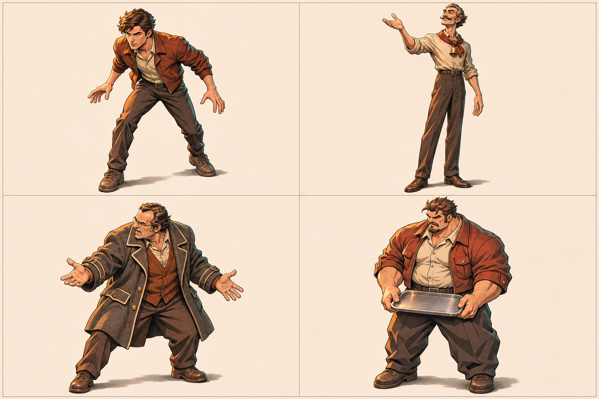
图像未能载入。重试打开原图，或继续查看文字说明。
空手顾客的紧凑前倾，与双手持盘的宽肩 Boss。先让出冲撞路线，再用短推完成一次真实接触。
13张选定概念板
66个设计槽
3个独立试玩入口
设计覆盖不等于
生产角色或动画完成度
02 / SLICE COVERAGE
| 对象 | 当前状态 | 可看什么／还缺什么 | 入口 |
|---|---|---|---|
| Hero年轻主角 | 程序表现 | 无武器的年轻阶段、短推与投掷姿态。最终角色图、镜头／脚底标定仍缺。 | 查看两战主角 ↗ |
| Enemy3 × Rusher | 概念＋占位 | 同一敌种的三个实例；E01-M提供形象。运行中尚非本概念板动画。 | 查看 E01 ↗ |
| BossThe Rush Boss | 概念＋占位 | 双手持短托盘、身体冲撞；不丢盘，不以图形尺寸改变攻击。 | 查看 E01 ↗ |
| Skills / VFXPush → Coin | 已有机制 | 短推接触、硬币飞行与命中。成套最终动作／VFX尚未交付。 | 试用技能 ↗ |
| SceneArena / Diner | 场景样图 | 原战斗场地保留。餐厅插画是独立风格样本，不是运行关卡。 | 看完整场景 ↗ |
| HUDHealth / Actions | 已有界面 | 可试玩HUD与暂停回看；小屏遮挡及读卡风险仍待继续验证。 | 查看三席 HUD ↗ |
| Growth / TransitionCoin / Founders | 机制＋概念 | 一次固定成长；三创始人插画已有，R6活动卡仍为纯文字。 | 看过场候选 ↗ |
| Next useChange the Route | 已有局部流程 | Coin面向后排；Backline与Dead End仍是占位角色，未完成整段精修。 | 进入两战原型 ↗ |
当前沿用一个年轻主角阶段。镜头、比例、脚底支点、八向与动作覆盖仍需实际场景标定；不以概念板数量替代这些验收。
03 / CHARACTER ATLAS
以下保留旧方案的13张原图，不代表新八战已完成角色或素材绑定。全部为不透明概念板；风格、镜头适配、动作与运行绑定仍需分别审阅。
早期 · E01–E04
早期 · E01–E04
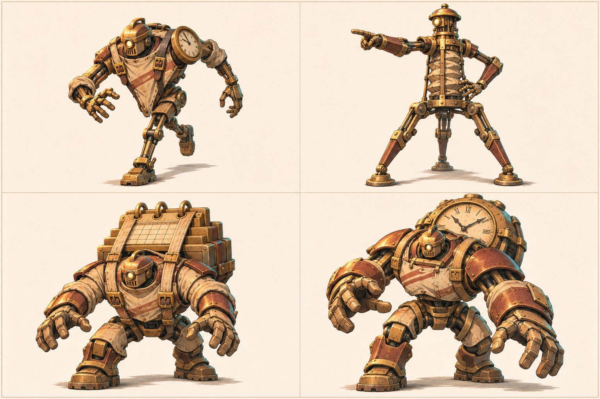
图像未能载入。重试打开原图，或继续查看文字说明。
早期 · E01–E04
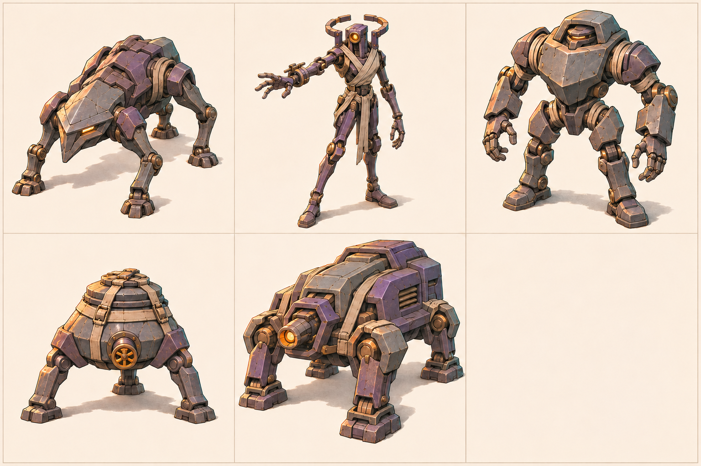
图像未能载入。重试打开原图，或继续查看文字说明。
早期 · E01–E04
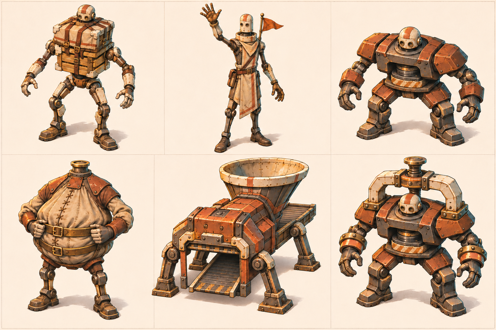
图像未能载入。重试打开原图，或继续查看文字说明。
中期 · E05–E08
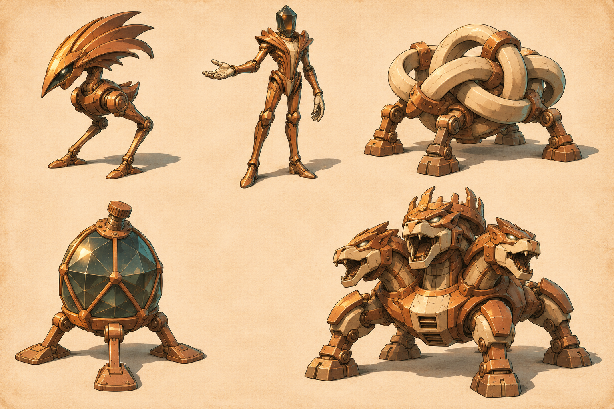
图像未能载入。重试打开原图，或继续查看文字说明。
中期 · E05–E08
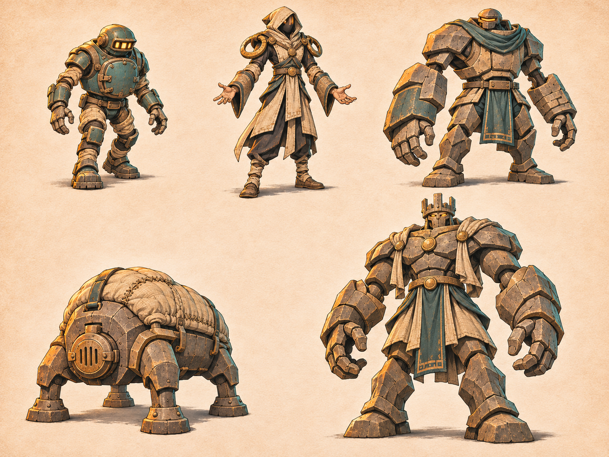
图像未能载入。重试打开原图，或继续查看文字说明。
中期 · E05–E08
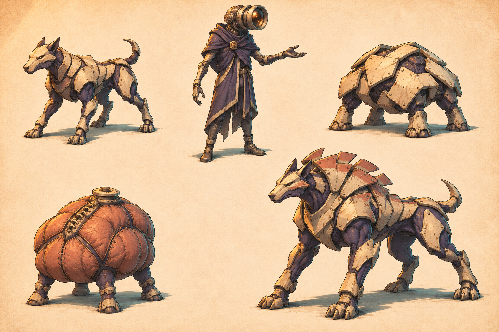
图像未能载入。重试打开原图，或继续查看文字说明。
中期 · E05–E08
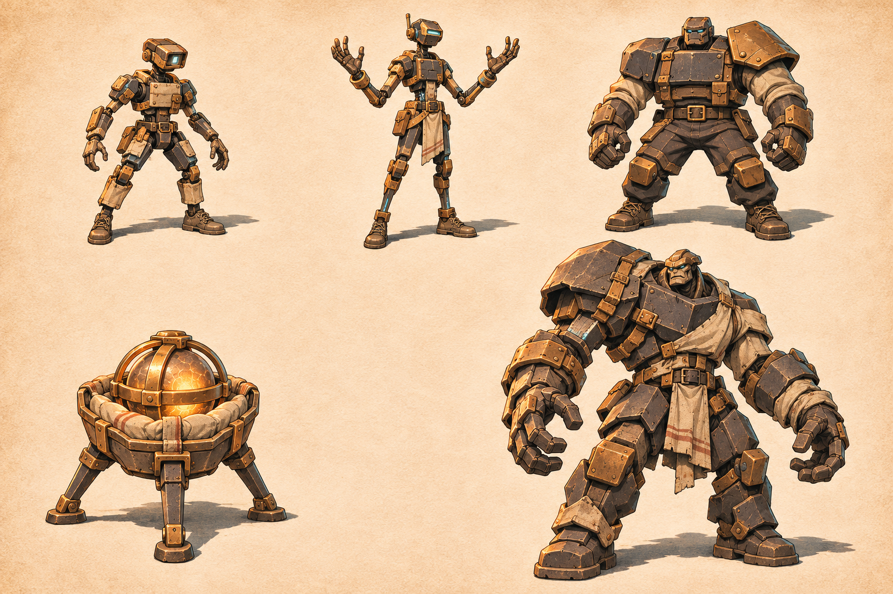
图像未能载入。重试打开原图，或继续查看文字说明。
后期 · E09–E11
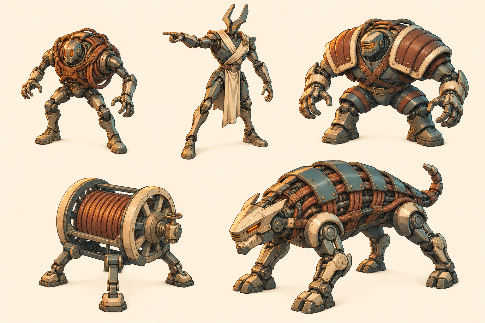
图像未能载入。重试打开原图，或继续查看文字说明。
后期 · E09–E11
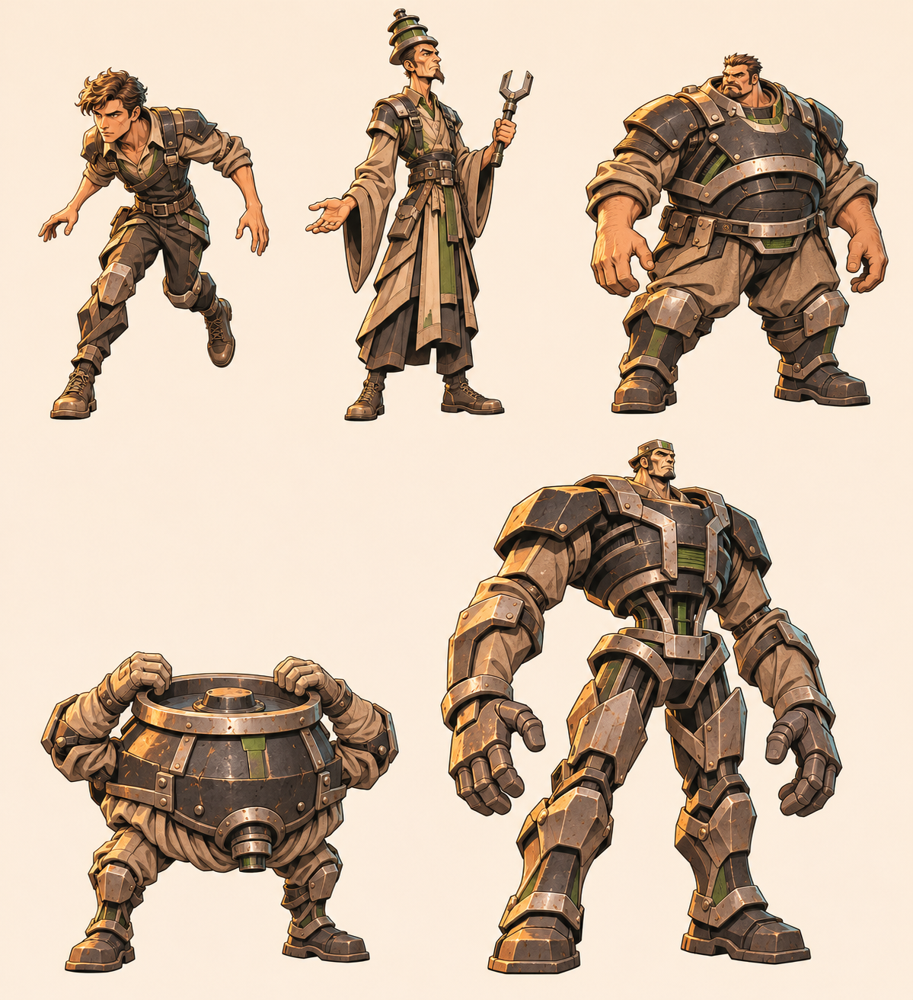
图像未能载入。重试打开原图，或继续查看文字说明。
后期 · E09–E11
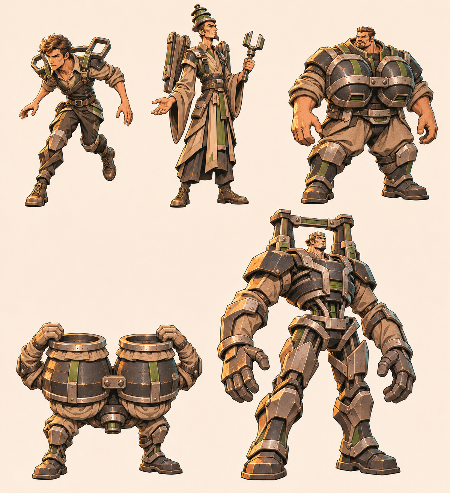
图像未能载入。重试打开原图，或继续查看文字说明。
后期 · E09–E11
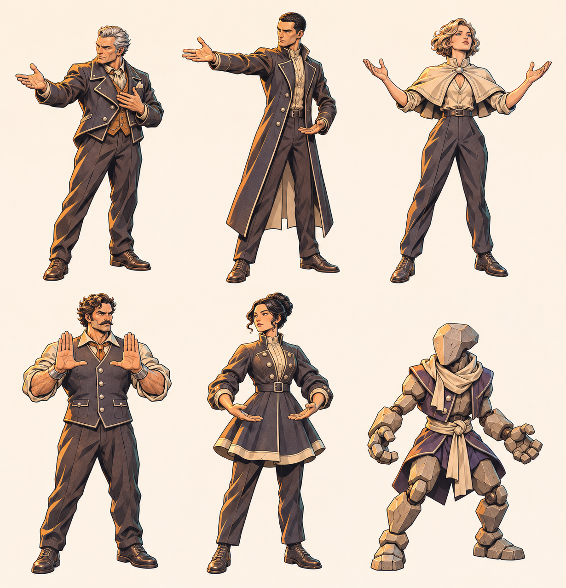
图像未能载入。重试打开原图，或继续查看文字说明。
后期 · E09–E11
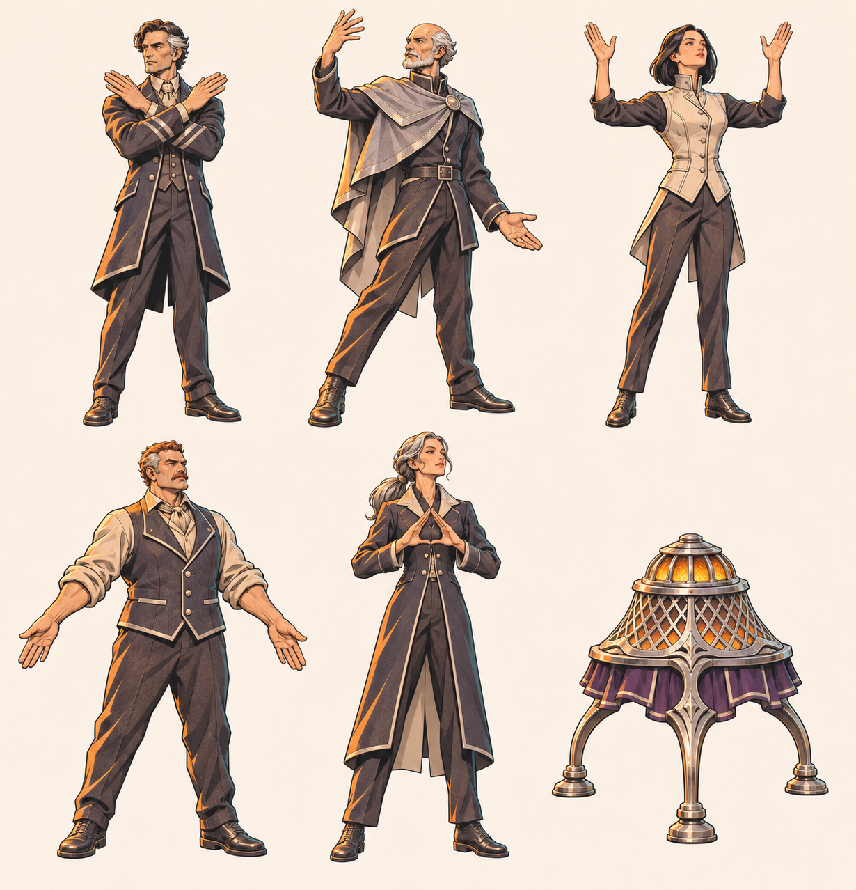
图像未能载入。重试打开原图，或继续查看文字说明。
04 / SCENE & TRANSITION
图像未能载入。重试打开原图，或继续查看文字说明。
既有绘画样本：暖灯、围裙、短托盘与拥挤的餐厅空间。视角更接近平视，风格偏写实绘画；它不是已接入战斗场地，也不证明真实人物曾发生图中冲突。

图像未能载入。重试打开原图，或继续查看文字说明。
Jensen Huang, Chris Malachowsky and Curtis Priem founded NVIDIA in 1993.
三位创始人共同出现，图片完整保留，文字位于图外。现有插画尚未获得最终肖像／风格批准；两战原型活动卡仍是纯文字。
05 / PLAYABLE REFERENCES
三个入口均为旧原型，不包含本轮新版对手与玩法。每个入口单独打开原型。先暂停或退出当前游戏，再切换；本评审页不会在后台运行游戏。
First Shift → Coin → Change the Route。看主角动作、冲撞预警、固定成长和下一战用途。
R6 · 局部试验开始两战试玩 ↗近战、直线与区域压力的混编试验。不是完整十席；人物与HUD仍为原型表现。
R6 · 三席试验打开三席试玩 ↗11遭遇、12成长节点。保留旧完整流程，与下方八战新方向分别评审。
11场 · 旧完整流程打开全关原型 ↗键盘／鼠标：WASD移动，鼠标定向；两战 J短推、解锁后 K硬币，Space闪避，P／Esc暂停。以各原型内说明为准；真实手机、音频与整局时长不由这些入口证明。
以下保留上一评审版原文，不代表本轮新设计或新复核。请与上方新版关卡区分阅读。
06 / DESIGN DIRECTION
下列浓缩既有设计：每战解决一个问题，赢后得到下一战可用的能力。新合同仍待回收；下方已纳入旧稿独立初审与故事负责人回应，不表示八战已经实现。
读锁向冲撞，收势后短推
Coin Shot → 够到后排前后排压力下改变角度
Returning Tray → 去回程覆盖移动改变托盘回程
Prepared Relay → 主动准备选择接力与出手时机
Focus Window → 收势收益协同攻击中的收势机会
System Volley → 多目标覆盖交错射线中持续进攻
Guarded Push → 正面防护分清可挡攻击与地面热区
Returning Hammer → 终战用途自由选目标，应对近远施法混编
完成战斗 → 最终结算现有目标是10–15分钟整局、手动战斗与固定奖励。原稿900秒是预算；并非自然通关测量。新技能、十席独立生命和旧素材迁移的细节，待完整设计回复与独立意见收口。
旧稿独立初审已在下方单列；本版仅展示旧稿初审；故事负责人回应不代表 Pro 答复或运行验证。
07 / INDEPENDENT CHALLENGE
有条件接受旧八战方向进入有界原型，尚未通过八战体验验收。新版 Pro 合同与复审尚未纳入本评审版。以下为设计意见与未验证风险，没有新证实的运行缺陷；故事负责人回应不代表Pro答复。自然10–15分钟、策略优劣、后期爽感与终章安全口均待实测。
P1：扩展或平衡接受前需验证；P2：可在小样中修正。严重性表示风险若成立的影响，不是已复现缺陷。
第2、4、5、6战若都能沿外围移动，等收势后投射，敌名与读招顺序的变化可能没有改变操作选择。当前不能据文字判定只是换皮。
用第4、5战短遭遇比较出手位置、目标与攻击选择；若无差异，先改一处空间关系或时序。
接受差异不足的风险，暂不认定只换皮；等待新合同后用中段短遭遇比较，当前不增敌种或血量。
旧稿初审·待新稿复审/待实测
若远程投射能在最大射程持续输出，后退的风险与耗时都更低，其他技能可能只有理论用途。现有长按试玩不足以证明这种策略最优。
同一短遭遇分别尝试精准投射加移动、往返覆盖加移动、自由组合；比较受伤、时间、输出中断与操作负担。
接受支配策略对照要求；保留替代解法，不用强制武器锁证明多样性，现有试玩不足以判定单招最优。
旧稿初审·待新稿复审/待实测
准备若无代价，可能变成每次攻击前的固定按键；若代价大于弱回声收益，则可能一直不值得使用。窗口奖励若只重复最安全的攻击时机，也可能不可感知。
冻结一个起测合同，比较直接攻击与先准备再攻击的成本和机会；观察玩家能否认出窗口命中及收益。
部分接受：需核准备成本和窗口收益；暂不采纳合并成长回执建议，先评新合同，避免本地另改七次成长。
旧稿初审·待新稿复审/待实测
身体碰撞堵住横移路线时，射线、近战与区域即使分别可躲，也可能连续封住唯一出口。开放阵形与并发上限本身不能证明安全。
从贴身、角落与外侧三个位置，用真实速度和碰撞半径观察预警至命中期间的连续通路；无解时先调整单次攻击时序或落区。
接受为终章体验验收门槛；文本留缺口不能算可达证明，不新增自动无敌。
旧稿初审·待新稿复审/待实测
旧稿预算恰为15分钟且不含死亡、暂停和阅读；新手多一个失败或几个动作循环即可超时。终战若只是重复同组读招，也可能时长合格但拖沓。
分别记录活动战斗、必经转场、重试和阅读；先量首个成长闭环，再量自然全关，优先删重复批次与空转。
接受分别报告成功局、重试与阅读时间；15分钟仍是目标，不用加血或强制等待填满预算。
旧稿初审·待新稿复审/待实测
若敌人生命与数量随升级同步上涨，覆盖、击杀和可控空间都不变，玩家可能只看到武器变大；若控制无限压制，又可能消除终章读招。
用同一小群目标和瞄准路径做升级前后短对照，比较覆盖、有效命中次数与击退反馈，同时保留一次清楚的Boss读招要求。
接受升级前后可观察对照；具体幅度等待Pro合同与用户审阅，当前不新增数值。
旧稿初审·待新稿复审/待实测
瞄准后少移动连按可能过关，却未学会锁向后让路与收势时反击；鼠标朝向不清也可能让新手误以为推击失效。首战允许宽容通过仍可能合理。
比较低移动连按与主动读招两种普通输入尝试，记录受伤、时间与操作负担；观察玩家能否辨认一次锁向和收势，必要时先补轻量提示。
接受能过与教会的区别；保留首战容错，先比较低移动连按和读招打法，不据一次工具试玩加难度。
旧稿初审·待新稿复审/待实测
玩家读解锁说明时下一战已经施压，可能受伤或看漏新按钮；非阻断短卡的时间预算不能证明阅读安全。
观察读卡与跳过两种胜利后流程，记录漏读、受伤和首次新能力使用；先精简提示并利用既有暂停回看，时序调整另行审阅。
接受阅读注意力风险；保留非阻断短卡与手动暂停，是否改时序须另行审阅，当前不加自动暂停或无敌。
旧稿初审·待新稿复审/待实测